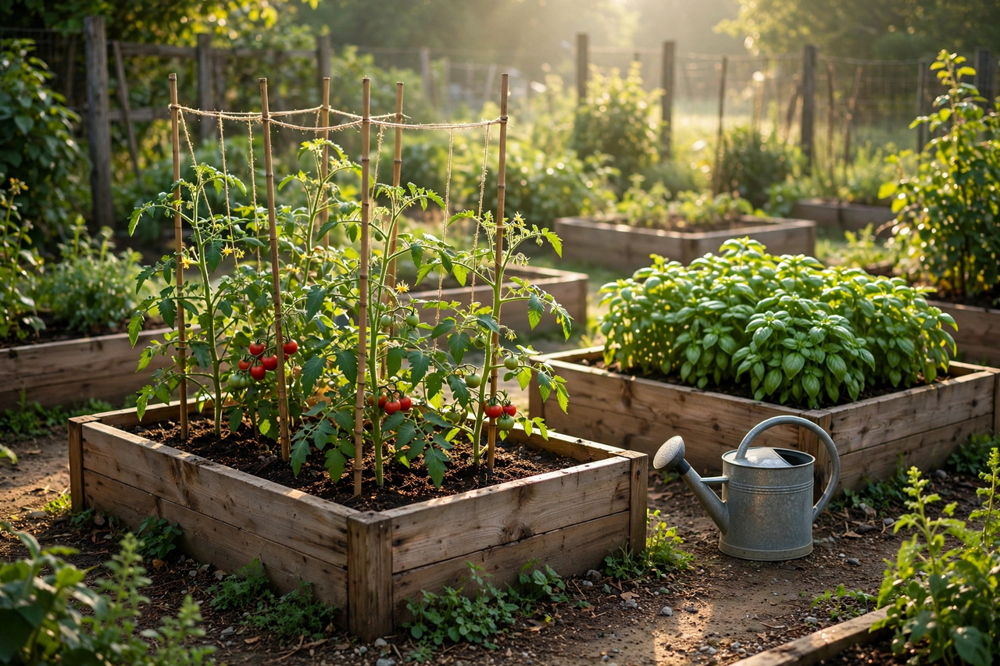
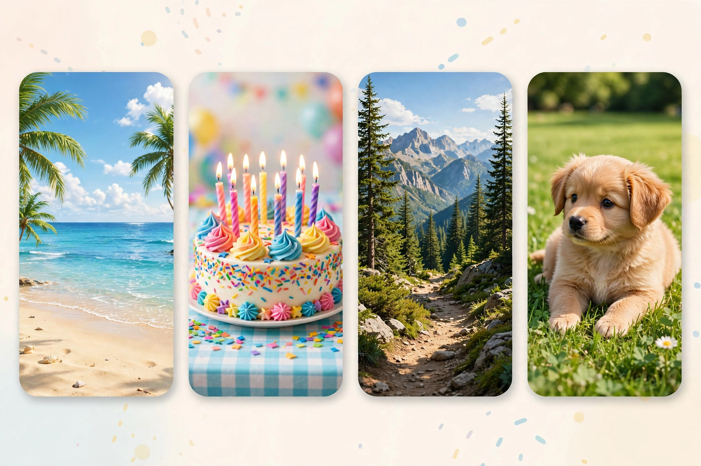
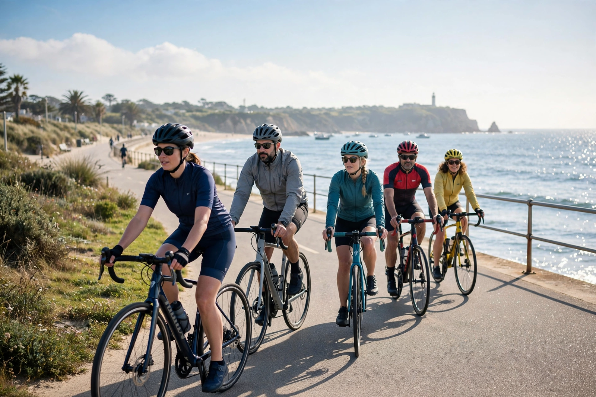
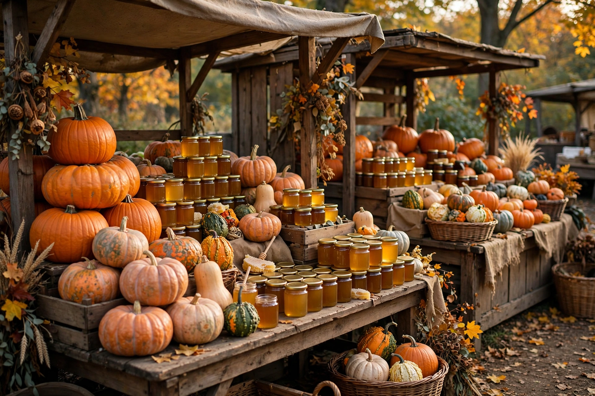

Finally finished replanting the community garden beds this morning — tomatoes, basil and far too many courgettes. Volunteers welcome next Saturday!

Raised garden beds in morning sun
👍 ❤️ 48 · 12 comments · 3 shares
👤 Alex Morgan
👥 Friends
🕐 Memories
🔖 Saved
👨👩👧 Groups
🛒 Marketplace
📰 Feeds
📅 Events

Stories: a beach, a birthday cake, a mountain hike, a new puppy
Finally finished replanting the community garden beds this morning — tomatoes, basil and far too many courgettes. Volunteers welcome next Saturday!

Raised garden beds in morning sun
👍 ❤️ 48 · 12 comments · 3 shares
Reminder: Sunday's coastal ride leaves the pier at 9am. Route is 32 km, coffee stop halfway. Helmets required, good vibes encouraged.

Cyclists on a seafront path
👍 96 · 24 comments
Our neighbourhood book club picked a sea adventure novel for November. Meeting at the library, biscuits provided as always.
👍 ❤️ 31 · 18 comments
Autumn market this weekend: pumpkins, local honey, and the return of the apple press demonstration.

Market stalls with pumpkins
Priya Sharma 🟢
Tom Alvarez 🟢
Jess Okafor
Marco Bianchi 🟢
Group conversations
Weekend Hikers
Flat 4B neighbours